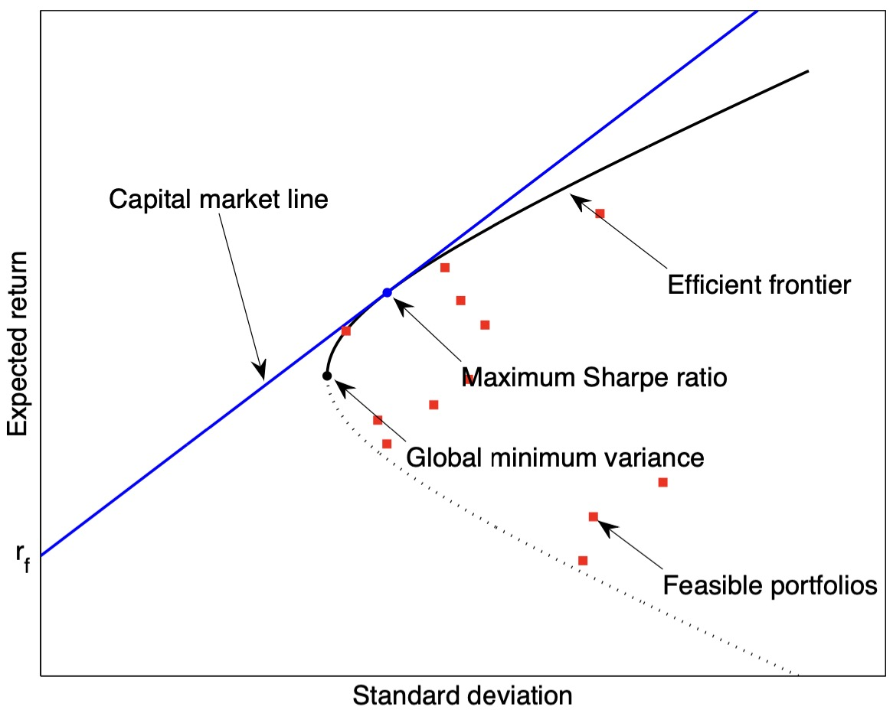
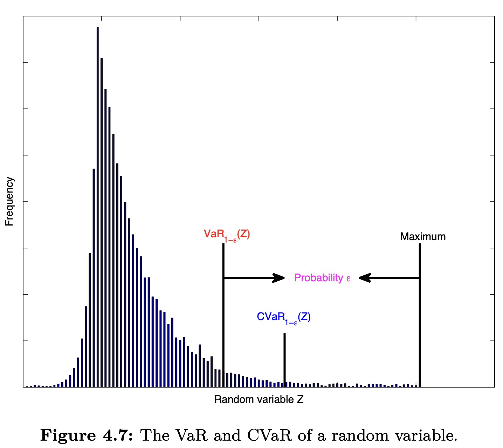

Portfolio Optimization with Known Parameters
首先引入一些之后使用的符号定义。
In practice, a portfolio deals with a whole universe of \(N\) assets. We denote the log-returns of the \(N\) assets at time index \(t\) with the vector \(\mathbf{r}_t \in \mathbb{R}\).
The time index \(t\) can denote any arbitrary period such as minutes, days, weeks, etc. The historical data before \(t\) is denoted by \(\mathcal{F}_{t-1}\).
已知历史数据 \(\mathcal{F}_{t-1}\)，我们可以将回报率分解为 期望回报率 和 噪声：
其中，\(\mathbf{\mu}_t\) 是根据历史数据 \(\mathcal{F}_{t-1}\) 计算得到的期望收益：
\(\mathbf{\varepsilon}_t\) 是均值为 0 的白噪声，其方差为：
我们通过历史数据主要是希望计算出 \(\mathbf{\mu}_t\) 和 \(\mathbf{\Sigma}_t\)。
如果我们简单假设 \(\mathbf{\mu}_t\) 和 \(\mathbf{\Sigma}_t\) 不随时间变化，即 \(\mathbf{r}_t\) 是独立同分布的，则利用 \(1, ..., t-1\) 时刻的历史数据，可以简单估计：
假设我们总资金为 \(B\) 美元，假设每种资产配置的权重为 \(\mathbf{w}\)，我们有：
- \(B \mathbf{w}\) 表示在每种资产投入的资金，可以为负数，代表 short selling
- portfolio 的期望回报率是 \(\mathbf{w}^T \mathbf{\mu}\)
- portfolio 的风险（即波动率）为 \(\sqrt{\mathbf{w}^T \mathbf{\Sigma} \mathbf{w}}\)
1 Markowitz Mean-Variance Portfolio Optimization
Markowitz mean-variance framework 是组合优化理论的基石。它的目标是寻找回报和风险的最佳 trade-off。
1.1 Mean-Variance Trade-Off Optimization
我们可以将组合优化问题表示为：
其中，\(\lambda\) 参数反映投资者的风险厌恶程度。
该优化问题可以简单用 Lagrange multiplier 解决，令：
解方程组：
从 1 式得到：
将 \(\mathbf{w}\) 带入 2 式，得到上式的 \(\alpha\)：
至此，该优化问题的最优解确定。
Efficient Frontier
有效边界

所谓 capital market line，是指当一个交易者可以以无风险利率贷款和借款（理想状况）时的投资组合。
1.2 Sharpe Ratio Optimization
夏普率(Sharpe Ratio) 表示每单位风险（波动率）的超额收益：
如果以最大夏普率为优化目标，则组合优化问题可以表示为：
该问题不是一个凸优化问题，因此无法直接求解。注意到 \(\mathbf{w}^T \mathbf{1} = 1\)，可以改写为：
这样转化的意义是让目标函数与 \(\mathbf{w}\) 的尺度无关。这是显然的，假设把 \(\mathbf{w}\) 放大为 \(k \mathbf{w}\)，由于分子和分母抵消，目标函数不变。
因此，条件 \(\mathbf{1}^T \mathbf{w} = 1\) 可以放宽为 \(\mathbf{1}^T \mathbf{w} > 0\)。因此，我们总能找到一组 \(\mathbf{w}\) 使得：
那么，我们就可以固定这个分子为 1，转而寻找使分母最小的解，转化为一个凸优化问题：
如果忽略 \(\mathbf{1}^T \mathbf{w} > 0\) 这个条件，则上式的解为：
这个最优解也有效边界上（图中蓝色的点），它是 capital market line 与 effective frontier 的交点。
2 Drawbacks of Markowitz Framework
虽然 Markowitz 的方法简单易懂，但是实际中却并不实用。因为它有两个主要缺陷：
- 波动率并不是一个好的风险评价指标
- 对参数变化极其敏感
2.1 Variance Is Not a Good Risk Measurement
在评价一个投资组合的时候，我们更加在意是否出现大的亏损，小额的亏损是可接受的波动，同时，我们不应该去惩罚大额的上涨。
因此，组合优化问题我们可以 只惩罚大额亏损 的情形。比较常用的风险测度是 Conditional Value at Risk (CVaR)。
2.1.1 CVaR Portfolio Optimization
首先介绍 VaR (Value at Risk)。"p VaR" 表示损失高于 VaR 的可能性为 \(1-p\)。换言之，损失低于 VaR 的概率至多为 \(p\)。数学上定义，对于随机变量 \(X\)，\(\text{VaR}_{p}(X)\) 就是 \(X\) 的 \(p-\text{quantile}\)。
举例说明，假设某个 portfolio 的 95% VaR 是 100 万。则表示有 5% 的几率这个 portfolio 会亏损 100 万以上。
CVaR 是 VaR 的 条件期望值，即加权平均值。如下图所示：

VaR 并不是一个 coherent risk measure，但是 CVaR 是，并且还能转化为凸优化问题。因此，得益于其良好的数学特性，CVaR 得到了广泛的实际应用。
假设 \(\mathbf{r}\) 是各个资产的回报率，portfolio 亏损是 \(-\mathbf{w}^T \mathbf{r}\)，则组合优化问题为：
这个优化问题是一个非凸优化。Rockafellar 和 Uryasev 引入了一个辅助函数来将其转化为凸优化问题：
其中：
- \(\gamma = \text{VaR}_{1 - \varepsilon} (X)\)，显然，它与 \(\mathbf{w}\) 的取值有关。
- \(p(x)\) 是密度函数，代表使得 1 成立的 \(x\) 的概率
Rockafellar 和 Uryasev 证明了 \(F_{\alpha}(\textbf{w}, \gamma)\) 对于 \(\gamma\) 是凸函数。并且有：
虽然转化为了一个凸优化问题，但是 \(E[\mathbf{w} \mathbf{r} - \gamma]^{+}\) 同样不是很好计算，我们可以使用历史回报 \(\mathbf{r}_t\) 来近似：
于是，该问题转化为了一个线性规划问题，可以简单求解。
2.2 Markowitz Framework Is Too Sensitive
Markowitz 方法的第二个缺点是对参数过于敏感。\(\mathbf{\mu}\) 和 \(\mathbf{\Sigma}\) 的微小变化都能引起 \(\mathbf{w}\) 的大幅变化，导致它要求频繁调整仓位。